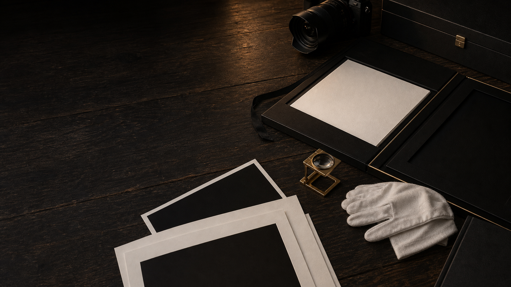
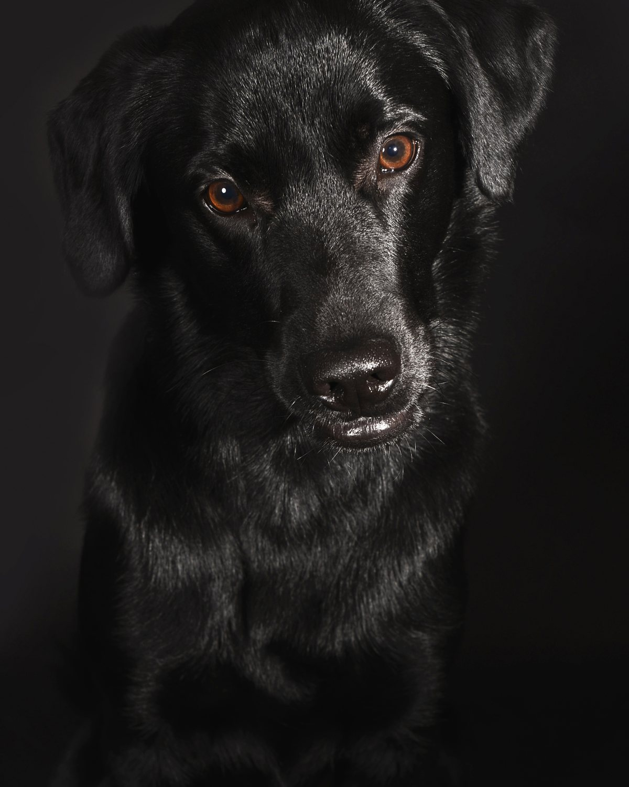
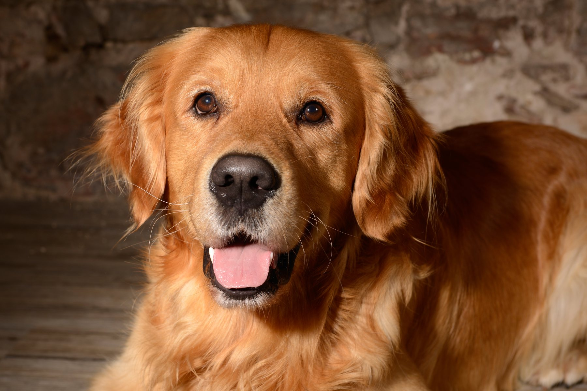

Portfolio
Sorgfältig gewählt. Fein gedruckt.
Ausgewählte Fine-Art-Hundeporträts aus dem Studio Waiblingen: von ruhigen Charakterstudien bis zu Bildern, die als Wandkunst bleiben.

Signature Gallery
Fine-Art-Hundeporträts mit Blickfang. Und mit Ruhe.
Die Galerie ist wie eine kleine Ausstellung aufgebaut: große Motive, ruhige Details und emotionalere Mensch-Hund-Momente lassen sich getrennt ansehen.
In meinem Portfolio sehen Sie eine Auswahl an Fine-Art-Hundeporträts, die in meinem Studio in Waiblingen entstanden sind. Jedes Bild ist das Ergebnis eines ruhigen Shootings, mit viel Zeit, professionellem Licht und einem Blick für den Charakter des Hundes.
Manche Motive sind reduzierte Charakterstudien, andere zeigen die innige Verbindung zwischen Mensch und Hund. Viele dieser Aufnahmen entfalten ihre Wirkung erst als großformatige Wandkunst, als Fine-Art-Wandbild, im Album oder als edler Print. Wer sich ein eigenes Hundeporträt aus dem Raum Stuttgart wünscht, bekommt hier einen Eindruck davon, was bei einem Shooting bei mir entsteht.
Jedes Porträt beginnt mit einem persönlichen Gespräch: Ich lerne Ihren Hund kennen, plane Licht und Ablauf und nehme mir bewusst Zeit, so kann ich auch unsichere oder sensible Hunde entspannt fotografieren. So entstehen ehrliche, ruhige Charakterbilder statt gestellter Schnappschüsse. Vom ersten Kontakt bis zur finalen Bildauswahl begleite ich Sie persönlich. Stöbern Sie in Ruhe durch die Galerie.
Zum Öffnen antippen



Mensch & Hund
Die Verbindung, die bleibt.

{kind=link}
{kind=link}
{kind=link}
{kind=link}
Familien-, Baby-, Kinder- und Businessfotografie finden Sie weiterhin auf meiner bestehenden Seite moest-fotografie.de.
Termin anfragen
Sehen Sie hier Ihren Hund?
Lassen Sie uns ein Porträt schaffen, das genauso bleibt.